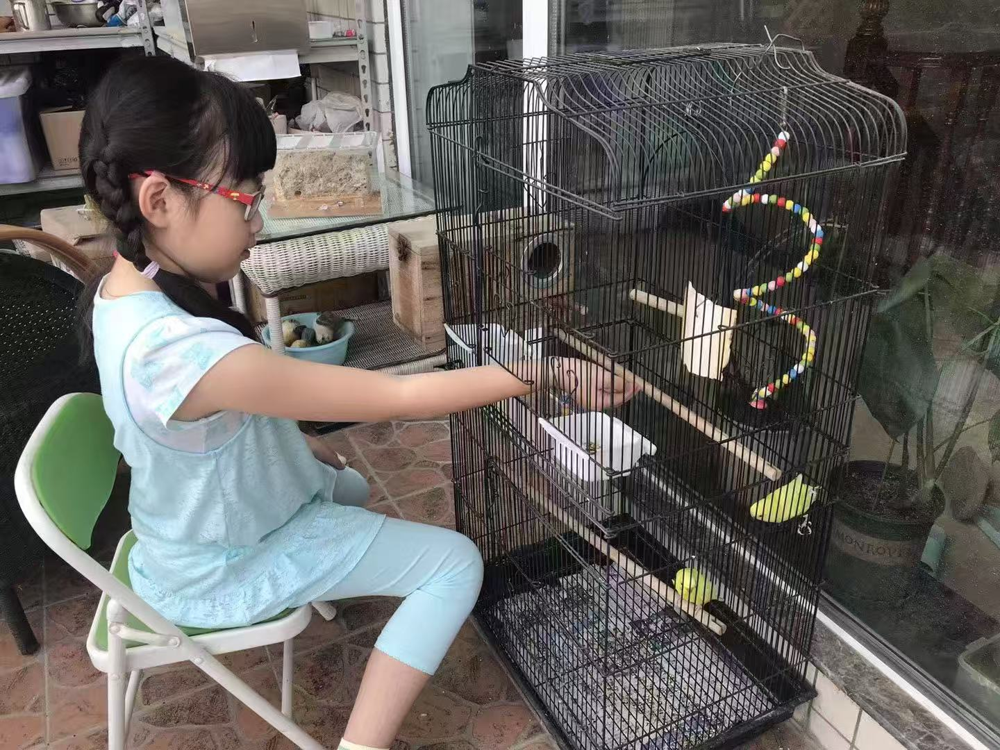
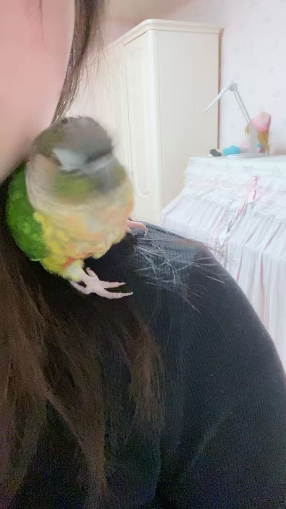
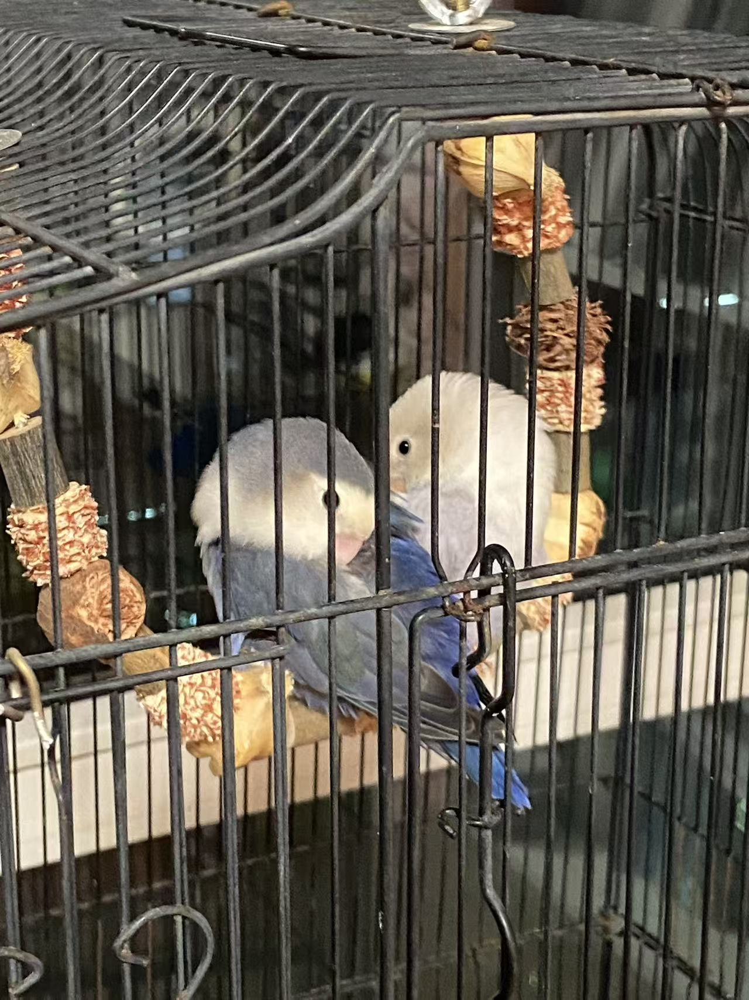

Me & the birds
Scale 01 · One Bird — the place where everything on this site begins.
I have kept birds for as long as I can remember. A parrot on my shoulder was the first animal I ever felt responsible for — not a pet to be admired from a distance, but a small life with its own moods, fears and routines. Watching it taught me to notice: what it ate, what it feared, what comforted it. Before I ever made a survey or kept a field notebook, I kept a bird — and the habit of paying attention never left me. Every project on this site, from city collision surveys to a Qinling field week, is a longer version of that first question: what does this animal need from the world I have built around it?


